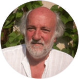

教师培训项目负责人
菲尔·琼斯 Phil Jones
英国教师专业教学标准制定者 CEBVEC中心教师培训和课程研发工作负责人 NPTC的教学与学习主管
Phil Jones有15年“教育研究生资格证书”CPGE教育经历，担任课程主任达11年之久，其教过的学生遍布英国和全球各地，包括新西兰，中东，加拿大和澳大利亚。这些学生来自不同的大学、学校和职业教育学院的优秀教师和职业培训师。
Phil Jones师从当代著名教育家Geoff Petty，Carol Dweck，John Hattie等人。近年来，一直参与循证教学方法实践和研究，并向包括中国在内的世界各国推广。

杰夫·裴迪 Geoff Petty
当代著名教育家 200余所学校及教育机构(包括政府机构)顾问 著作有：《今日教学》、《循证学》等
享誉世界的卓越教师Geoff Petty是《今日教学》（第五版）的作者，该书是畅销英国二十年的教师培训第一书，是教育工作者、研究者“人手一册”的必备工具书。该书的重心始终放在实用性——教师如何去理论联系实际，进而真正影响学生的学习。
他的最新著作《循证教学》已出版至第二版。这本书总结了大量最有效的教学方法、策略及技巧，并研究了如何将其利用到提升个人及团队教学水平上。他的著作已被翻译成8国语言，包括中文和俄文。他的教学理念在英国，罗马尼亚和立陶宛等国，得到了国家层面上的推广使用。 他的指导切合教学实际，颇具支持性和挑战性，在全球范围内享有声望。
教师培训团队部分教学专家简介
蕾切尔·沃德 Dr Rachel Ward
医学博士学位 教育研究生资格证书
蕾切尔约在10年前取得了医学博士学位。她曾在卡迪夫大学健康医院的血液学部门工作并开展了慢性淋巴细胞性白血病的研究。她向同部门、同大学同事以及在不同会议上，如英国血液学会、美国血液学会上展示过她研究的数据。
她在卡迪夫大学血液学部门做研究时，也给一年级的牙科学生授课。她目前是NPTC数学与科学系的高级讲师，并承担教学与学习开发工作。她同时也教授高级生物，获得高等教育及应用科学中的BTEC扩展文凭。她还与我们的MAT学生（最有能力和有才华的学生）合作，并经常为这些学生组织前往牛津，剑桥和加的夫大学的旅行。 蕾切尔在NPTC指导PGCE学生。
丽莎·詹金斯 Dr Lisa Jenkins
物理学博士学位 教育研究生资格证书 (继续教育)
在卡迪夫大学学习物理专业本科期间，丽萨就获得了英国钢铁公司的奖学金并在新港实验室（Newport）工作。取得物理学“固态物理学”博士学位后，她去到诺丁汉大学教授物理。在此期间，她参与了各项试验研究并在日本、美国、德国参加各种会议呈现自己的工作成果。在日本时，她还帮助编辑英文科学研究论文供日本与会代表使用。
她曾在南威尔士三所大学的继续教育部门担任了二十一年的A级物理讲师。五年前，她成为尼斯港塔尔伯特学院第六届学院副校长。
克里斯·史密斯 Dr Chris Smith
英语文学博士 教育研究生资格证书
克里斯是一位著名的作家，也是一位成功的老师。他已经写了很多书，他的Robert Southey一书受到极大好评。他在斯旺西大学完成了英语文学博士学位。 他是一名高级讲师，在英语和语言系负责教学与学习开发。克里斯还教授高级英语文学。他已在NPTC任教了15年。克里斯在NPTC学院的PGCE计划里担任教学，并多年来一直为PGCE学生提供指导。
萨拉·格雷 Sarah Gray
心理学学士
萨拉是NPTC的基础技能高级讲师。她的工作涉及面十分广泛。她负责第六届学院员工开发培训，以及为所有校区的讲师们开发提供扫盲和数学研讨会。
她目前在尼斯校区教授AS和A2心理学。她曾在开放大学心理学模块中担任辅导员，目前是英国资格评估与认证联合会高级心理学的助理测验员。萨拉在NPTC学院的PGCE计划里担任教学，并多年来一直为PGCE学生提供指导。 丽萨工作过的所有机构的A级物理学成绩都远优于国家水平。成功的AS和A级结果与高AS与A2进展率一起，表明学生对学习充满兴趣。许多学生还继续选择物理学作为大学学位课程。
马特·琼斯 Matt Jones
教育培训硕士 运动训练学士 教育研究生资格证书
马特在斯旺西大学取得教育培训硕士学位。他教授一系列与卡迪夫大学和南威尔士大学合作的体育相关学位。他在尼斯校区教BTEC体育。 现任体育与公共服务副主任，该部高级讲师。马特在NPTC学院的PGCE计划里担任教学，并多年来一直为PGCE学生提供指导。 他的兴趣是高质量的互动教学。
尼古拉·布兰登 Nicola Brandon
计算机学士 教育研究生资格证书
尼古拉是NPTC的高级讲师，负责计算机系的工作。她在尼斯校区教授AS和A2计算机。 尼古拉在NPTC学院的PGCE计划里担任教学，并多年来一直为PGCE学生提供指导。
今年尼古拉受邀在威尔士全国教学与学习会议上发表讲话，并开展关于混合学习的讲习会。 尼古拉对教学和学习、以及如何整合ICT的使用来吸引学生充满热情。她在NPTC学院PGCE上开发的两个模块获得了高度评价。
莱斯·格利菲斯 Les Griffiths
后义务教育培训硕士 教育研究生资格证书
莱斯在斯旺西大学完成教育硕士学位，曾在NPTC任教，现在是NPTC的PGCE导师。 他的教育背景是木工，他还在NPTC教学生木工。在NPTC期间，莱斯一直是建筑系高级讲师和学院副院长。他热衷于提升建筑系职业讲师的技能。
今年尼古拉受邀在威尔士全国教学与学习会议上发表讲话，并开展关于混合学习的讲习会。 尼古拉对教学和学习、以及如何整合ICT的使用来吸引学生充满热情。她在NPTC学院PGCE上开发的两个模块获得了高度评价。